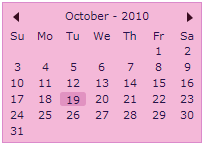

You can set the custom color for the Silverlight controls by using the ActiveColorScheme property defined in the Skin Manager class. This property can be set either in XAML or in C#.
Table 72: ActiveColorScheme Property
|
Property |
Description |
Type |
Data Type |
Reference links |
|
ActiveColorScheme |
Sets the custom color for the controls.
|
Attached Property |
Color
|
Setting ActiveColorScheme property in XAML
The following code snippet explains how to set the ActiveColorScheme property in XAML.
1. Add the following namespace in the sample.
|
[XAML] xmlns:theme="clr-namespace:Syncfusion.Windows.Controls.Theming;assembly=Syncfusion.Shared.Silverlight" |
2. Set the ActiveColorScheme property for the control as shown below.
|
[XAML] <syncfusion:CalendarControl theme:SkinManager.ActiveColorScheme="Red" />
|
Setting ActiveColorScheme Property in C#
The following code snippet explains how to set the ActiveColorScheme property in C#.
1. Name the control using the Name attribute.
|
[XAML] <syncfusion:CalendarControl Name="file" Height="350" Width="600"/> |
2. Add the following line in code behind file.
|
[C#] SkinManager.SetActiveColorScheme(file, Colors.Red);
|
The output is as shown below.

Figure 1160: Calendar with Custom Color